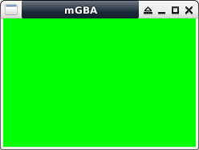

main.c
參考資訊：
https://github.com/morgenman/nds-docker
Mode：
main.c
#include <stdio.h>
#include <gba_console.h>
#include <gba_input.h>
#include <gba_video.h>
void fill_color(u16 col)
{
u16 *p = (u16 *)MODE3_FB;
for (int c = 0; c < (240 * 160); c++) {
*p++ = col;
}
}
int main(void)
{
u16 cur_key = 0;
u16 pre_key = 0;
SetMode(MODE_3 | BG2_ON);
while (1) {
scanKeys();
cur_key = keysDown();
if ((cur_key != 0) && (cur_key != pre_key)) {
pre_key = cur_key;
if (cur_key & KEY_UP) {
fill_color(0x1f);
}
else if (cur_key & KEY_DOWN) {
fill_color(0x3e0);
}
else if (cur_key & KEY_LEFT) {
fill_color(0x7c00);
}
else if (cur_key & KEY_UP) {
fill_color(0x7fff);
}
else {
fill_color(0x0000);
}
}
}
return 0;
}
完成
